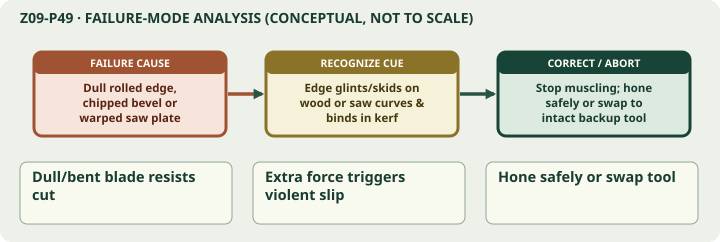

Z09-P49 · Tools and construction · New manuscript
Diagnose dull blades, rolled edges, chipped bevels and warped saw plates
Recognize cutting-edge degradation early because dull or bent tools force users to push harder and lose control.
When it applies · Ongoing monitoring of knives, saws and hatchets during field or camp woodcraft.
Equipment · Visual light reflection check, safe scrap-wood test and field honing stone or spare saw blade.

Actions
- Spot a dull or rolled edge by checking whether a blade slips off wood instead of biting smoothly or glints brightly along the very apex under light—forcing a dull blade causes sudden uncontrolled slips.[K01, K04, K02]
- Spot a warped or tooth-damaged saw blade when the saw persistently curves sideways in a straight cut, chatters violently or jams repeatedly even in open kerfs.[K04, K05, ED]
- Pause work calmly to touch up a mildly dulled bevel safely, or swap to a spare blade/backup tool rather than muscling through tough material.[K04, K01]
Failure recognition · Pressing with full shoulder weight on a dull rolled knife blade until it skids off a dry branch straight into the opposite thumb.[K01, K02, K04]
Verify · Confirm smooth predictable bite at light hand pressure and straight tracking in saw cuts before continuing.[K01, K04, ED]
Stop or change course · Retire cracked blades, bent saw plates or deeply chipped edges rather than fighting defective cutting geometry in the field.[K02, K04]
Evidence and editorial notes
- K01 · OSHA · Hand and Power Tools Safety and Health Topics (current web edition)
- Section: Hand Tools > General Safety Rules · Conditions: Use of knives, saws, axes, hammers and hand tools
Support: Keep hand tools in good condition, use the right tool for the job, examine each tool for damage before use, operate according to instructions and wear appropriate personal protective equipment.
Limitations: General occupational rules do not replace task-specific forestry or field-tool training. · Conflicting evidence: None; baseline tool safety framework.
Editorial note: Anchors tool selection, pre-use inspection and operating boundary cards in Z09. · Specialist reviewer: Tool safety and occupational safety
Primary source · checked 2026-11-24 - K02 · OSHA · Hand and Power Tools (OSHA 3080) (agency PDF)
- Section: Hand Tools > Knives, Chisels, Impact and Wrenches · Conditions: Manual cutting, striking and prying operations
Support: Direct cutting blades away from the body and bystanders, never use cracked wooden handles or mushroomed striking heads, and do not substitute wrenches or blades as pry bars.
Limitations: Does not specify material tensile ratings for improvised handles. · Conflicting evidence: None; directly informs safe cutting and impact-tool failure cards.
Editorial note: Prevents blade slip, splintered-handle and spalling-metal injuries. · Specialist reviewer: Tool safety and wilderness medicine
Primary source · checked 2026-11-24 - K04 · USDA Forest Service · Handtools for Trail Work (0523-2810-MTDC) (agency handbook)
- Section: Sharpening, Filing and Handle Maintenance · Conditions: Maintaining cutting edges and wood tool handles in field or shop
Support: Secure the tool firmly before filing or honing, keep fingers behind file guards, preserve factory bevel geometry without overheating steel and replace loose or cracked handles rather than taping them.
Limitations: Field touch-up honing does not correct chipped, cracked or heat-annealed steel blades. · Conflicting evidence: None; separates routine edge maintenance from unsafe handle patching.
Editorial note: Guides sharpening, rust prevention and handle-failure retirement cards. · Specialist reviewer: Tool maintenance and forestry safety
Primary source · checked 2026-11-24 - K05 · USDA Forest Service · Handtools for Trail Work PDF (agency PDF)
- Section: Sawing, Splitting and Lever Principles · Conditions: Cutting downed wood, clearing deadfall and moving heavy logs safely
Support: Assess bind and tension in fallen logs before cutting so saws do not pinch or limbs spring back; use solid levers and fulcrums safely without standing in the recoil path of strained timber.
Limitations: Complex storm-damaged or hung-up trees require professional sawyers and are outside camp tool scope. · Conflicting evidence: None; informs spring-pole, saw-bind and lever mechanical-advantage cards.
Editorial note: Prevents kickback, saw pinching and recoil injuries in Z09. · Specialist reviewer: Forestry tool safety and mechanical safety
Primary source · checked 2026-11-24
Source lineage · USFS handtool maintenance and OSHA 3080; new manuscript · Classification · New manuscript.